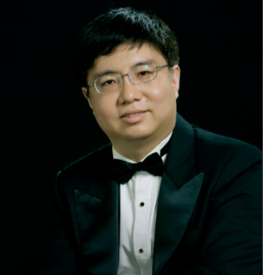

J. S. 巴赫的《哥德堡变奏曲》，BWV988，是巴赫著名的羽管键琴作品，1742年出版，这是音乐史上规模最大，结构最恢宏，也是最伟大的变奏曲。这部变奏曲是为两层大键琴而作，巴赫在各段变奏里都指定了键盘的种类。变奏曲的形式，是以一个主题，引导出对比命题和对应（反对）命题，然后再探求演绎与对比的各种可能性。巴赫这部作品，以他1725年为安娜·玛格达琳娜而作的小曲集中的一首萨拉班德舞曲作为主题，发展成30段变奏,实在令人叹为观止！公认的对《哥德堡变奏曲》最好的演绎者是加拿大钢琴家格伦·古尔德,1955年他所录制的《哥德堡变奏曲》几年来一直畅销不衰。在很多人眼里这张唱片几乎成为古尔德的一个标志。
图为格伦·古尔德与1955年录制《哥德堡变奏曲》的专辑图面
除此之外,1981年,晚年的古尔德先生,向年轻时的自己发出挑战,再次录制这首自己出的成名之作,从古尔德的两次录音版本中，很多人在音乐背后听到了演奏家两种截然相反的人生态度。早年的意气风发和英姿飒爽。晚年让位给老人面对死亡时超然的平静。
图为古尔德1981年的录制的专辑封面
除开古尔德之外,美国女钢琴家罗莎琳·图雷克的演绎也十分精彩,从十多岁开始,这部作品就成为图雷克生活的一部分,此后七十余年间她从未停止对它的探索,并留下了六次录音,当她最后一次录制这部作品时已是83岁高龄.
图为图雷克
这样一部伟大的作品,我国也有不少音乐家致毕生努力于此,华人钢琴演奏家朱晓玫,刚出国学习音乐时,身无分文,她为许多人家里干保姆,告诉主人自己不要工资都行,只求能在主人家里每天能练一会琴,就这样,她一路从美国辗转到巴黎,凭借着她对《哥德堡变奏曲》超强驾驭力，在2014年11月，她成为了全世界第一个在德国莱比锡托马斯教堂巴赫墓前，演奏巴赫乐曲的钢琴家,演奏前，朱晓玫在巴赫的墓前献上一束花，她深深鞠了一个九十度的躬，她说自己相信爸妈从小告诉她的话：“在墓边上对逝者的说话，对方能听见。”她用70分钟的演奏，以音乐完成了两个世界的对话。也让世界知道了，这个世界上弹奏巴赫乐曲最好的音乐家，是一位名叫朱晓玫的中国女人。
图为朱晓枚录制的专辑封面
我国键盘乐器演奏家盛原,师从于罗莎琳·图雷克,即使放眼世界,也很少有几位像盛原这样，能熟练用钢琴和羽管键琴驾驭《哥德堡变奏曲》的演奏家，他也分别用这两件乐器录制了这部作品,盛原的演奏有着鲜明的学者气质,或许不是那么感性,但极大程度凸显了声部结构本身交织进行的美感.
图为盛原
近年来,我国最活跃的钢琴家郎朗也录制了这首作品,他在吸收前人经验的基础上,融入了自己的特色,将高超的琴技展现出来.
图为郎朗在巴赫墓前的演奏
最后,欣赏一下最为经典的古尔德于1981年演奏的版本.(来源:bilibili)